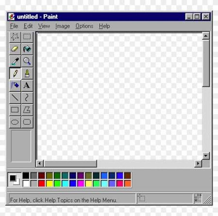

Блочные и строчные элементы
Ниже показана разница между блочным тегом <div>
и строчным тегом <span>.
Это блочный элемент div — он занимает всю ширину строки.
Второй div начинается с новой строки.
А вот строчные элементы:
span один
span два
находятся в одной строке друг за другом.
Тег <br> выполняет принудительный перенос строки.
Изображение с подписью

Нумерованный список (римские цифры, начиная с «c»)
- Изучение HTML
- Изучение CSS
- Изучение JavaScript
- Работа с сервером
Таблица 3×3 с объединением ячеек
| Объединено по горизонтали (1-2 столбец) | Объединено по вертикали (1-2 строка) | |
| Ячейка 2,1 | Ячейка 2,2 | |
| Ячейка 3,1 | Ячейка 3,2 | Ячейка 3,3 |
Демонстрация приоритетов CSS
Один и тот же элемент оформлен тремя способами: во внешнем файле (зелёный), внутри тега <style> (красный) и с помощью атрибута style (синий — победит, так как имеет наивысший приоритет).
Этот текст должен быть синим — атрибут style побеждает всё остальное.